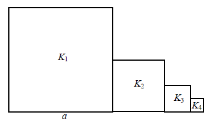

Różne zadania z ciągu geometrycznego
Liczby
\(2;\ 2x-1;\ 0{,}5\) (w podanej kolejności) są
pierwszym, drugim i trzecim wyrazem monotonicznego ciągu geometrycznego dla
A.\( x=0 \)
B.\( x=0 \) lub \(x=1\)
C.\( x=1 \)
D.\( x=-1 \)
C
Trzy lata temu pewne miasteczko liczyło \(25\ 000\)
mieszkańców. Przez trzy ostatnie lata każdego roku liczba mieszkańców zmniejszyła się o \(10\%\).
Oblicz, ile osób mieszka w tym miasteczku.
\(18225\)
W ciągu geometrycznym \((a_n)\) dane są: \(a_1=36\), \(a_2=18\). Wtedy
A.\( a_4=-18 \)
B.\( a_4=0 \)
C.\( a_4=4{,}5 \)
D.\( a_4=144 \)
C
Ciąg \((2\sqrt{2},4,a)\) jest geometryczny. Wówczas
A.\( a=8\sqrt{2} \)
B.\( a=4\sqrt{2} \)
C.\( a=8-2\sqrt{2} \)
D.\( a=8+2\sqrt{2} \)
B
W ciągu geometrycznym \((a_n)\) dane są: \(a_1 = 3\)
i
\(a_4 = 24\). Iloraz tego ciągu jest równy
A.\( 8 \)
B.\( 2 \)
C.\( \frac{1}{8} \)
D.\( -\frac{1}{2} \)
B
Liczby \(2x, 16, x\) są trzema kolejnymi wyrazami ciągu
geometrycznego. Oblicz \(x\).
\(x=8\sqrt{2}\) lub \(x=-8\sqrt{2}\)
Liczby
\(12, 18, 2x + 1\) są, w podanej kolejności,
odpowiednio pierwszym, drugim i trzecim wyrazem ciągu geometrycznego. Wynika stąd, że
A.\( x=11\frac{1}{2} \)
B.\( x=12 \)
C.\( x=12\frac{1}{2} \)
D.\( x=13 \)
D
W ciągu geometrycznym \((a_n)\) dane są
\(a_2=\frac{\sqrt{3}}{2}\) i
\(a_3=-\frac{3}{2}\).
Wtedy wyraz \(a_1\) jest równy
A.\( -\frac{1}{2} \)
B.\( \frac{1}{2} \)
C.\( -\frac{\sqrt{3}}{2} \)
D.\( \frac{\sqrt{3}}{3} \)
A
Liczby \(64, x, 4\) są odpowiednio pierwszym, drugim i trzecim wyrazem malejącego
ciągu geometrycznego. Oblicz piąty wyraz tego ciągu.
\(a_5=\frac{1}{4}\)
Liczby
\(-8,\ 4,\ x+1\) (w podanej kolejności) są
pierwszym, drugim i trzecim wyrazem ciągu geometrycznego. Wówczas liczba \(x\) jest równa.
A.\( -3 \)
B.\( -1{,}5 \)
C.\( 1 \)
D.\( 15 \)
A
Dany jest nieskończony ciąg geometryczny \((a_n)\), w którym \(a_3=1\) i
\(a_4=\frac{2}{3}\). Wtedy
A.\( a_1=\frac{2}{3} \)
B.\( a_1=\frac{4}{9} \)
C.\( a_1=\frac{3}{2} \)
D.\( a_1=\frac{9}{4} \)
D
Ciąg
\((27, 18, x+5)\) jest geometryczny. Wtedy
A.\( x=4 \)
B.\( x=5 \)
C.\( x=7 \)
D.\( x=9 \)
C
Liczby
\(3x−4\), \(8\), \(2\) w podanej kolejności są
pierwszym, drugim i trzecim wyrazem ciągu geometrycznego. Wtedy
A.\( x=-6 \)
B.\( x=0 \)
C.\( x=6 \)
D.\( x=12 \)
D
Ciąg \( (2x – 1, y, 6x + 3)\ \) jest arytmetyczny, a ciąg \( (3, y, 27)\ \) jest
geometryczny rosnący. Oblicz \(x\) i \(y\).
\(x=2\), \(y=9\)
Liczby: \( x-2,\ 6,\ 12 \), w podanej kolejności, są trzema kolejnymi wyrazami
ciągu geometrycznego. Liczba \( x \) jest równa
A.\(0 \)
B.\(2 \)
C.\(3 \)
D.\(5 \)
D
W ciągu geometrycznym \((a_n)\) pierwszy wyraz jest równy \(\frac{9}{8}\), a
czwarty wyraz jest równy \(\frac{1}{3}\). Wówczas iloraz \(q\) tego ciągu jest równy
A.\( q=\frac{1}{3} \)
B.\( q=\frac{1}{2} \)
C.\( q=\frac{2}{3} \)
D.\( q=\frac{3}{2} \)
C
Nieskończony ciąg geometryczny \((a_n)\) jest określony wzorem \(a_n=7\cdot 3^{n+1}\), dla \(n\ge 1\). Oblicz iloraz \(q\) tego ciągu.
\(q=3\)
W dziewięciowyrazowym ciągu geometrycznym o wyrazach dodatnich pierwszy wyraz jest
równy \(3\), a ostatni wyraz jest równy \(12\). Piąty wyraz tego ciągu jest równy
A.\( 3\sqrt[4]{2} \)
B.\( 6 \)
C.\( 7\frac{1}{2} \)
D.\( 8\frac{1}{7} \)
B
Kwadrat \(K_1\) ma bok długości \(a\). Obok niego rysujemy kolejno kwadraty \(K_2,
K_3, K_4,...\) takie, że kolejny kwadrat ma bok połowę mniejszy od boku poprzedniego kwadratu
(zobacz rysunek).  Wyznacz pole
kwadratu \(K_{12}\).
\(\frac{a^2}{2^{22}}\)
Dany jest ciąg geometryczny \((a_n)\), w którym pierwszy wyraz jest równy \(6\), a
czwarty \(12\sqrt{2}\). Liczba \(\sqrt[3]{a_3-4}\) jest równa
A.\( \sqrt[3]{2} \)
B.\( \sqrt{2} \)
C.\( 2 \)
D.\( 2\sqrt{2} \)
C
Ciąg \((a_n)\) jest geometryczny oraz \(a_1=2\), \(a_2=6\). Liczby \(a_3, x,
\frac{x}{2}\) w podanej kolejności tworzą ciąg arytmetyczny. Oblicz \(x\).
\(x=12\)
W rosnącym ciągu geometrycznym \((a_n)\), określonym dla \(n\ge 1\), spełniony jest
warunek \(a_4=3a_1\). Iloraz \(q\) tego ciągu jest równy
A.\( q=\frac{1}{\sqrt[3]{3}} \)
B.\( q=\frac{1}{3} \)
C.\( q=3 \)
D.\( q=\sqrt[3]{3} \)
D
W nieskończonym ciągu arytmetycznym \((a_n)\), określonym dla \(n\ge 1\), suma
jedenastu początkowych wyrazów tego ciągu jest równa \(187\). Średnia arytmetyczna pierwszego,
trzeciego i dziewiątego wyrazu tego ciągu, jest równa \(12\). Wyrazy \(a_1, a_3, a_k\) ciągu
\((a_n)\), w podanej kolejności, tworzą nowy ciąg - trzywyrazowy ciąg geometryczny \((b_n)\). Oblicz
\(k\).
\(k=11\)
Dany jest ciąg arytmetyczny \((a_n)\) o różnicy \(r \ne 0\) i pierwszym wyrazie
\(a_1 = 2\). Pierwszy, drugi i czwarty wyraz tego ciągu są odpowiednio pierwszym, drugim i trzecim
wyrazem ciągu geometrycznego. Oblicz iloraz tego ciągu geometrycznego.
\(q=2\)
Wyznacz pierwszy wyraz i iloraz ciągu geometrycznego \((a_n)\), wiedząc, że:
a)
\(a_5-a_3=1680\)
i \(a_3+a_4=560;\)
b)
\(a_6-a_4=432\)
i \(a_5-a_4=108;\)
c)
\(a_7-a_3=120\)
i \(a_7-a_5=96;\)
d)
\(a_1+a_5=1285\)
i \(a_2\cdot
a_4=6400;\)
Z beczki zawierającej \(30\) litrów wina karczmarz zaczerpnął \(1\) litr, a
następnie dolał \(1\) litr wody. Postąpił tak dziesięć razy. Ile czystego wina pozostało w beczce?
Wykaż, że liczby \(\sqrt{5}-2,\ \frac{1}{2},\
\frac{\sqrt{5}+2}{4}\) tworzą ciąg geometryczny.
Wykaż, że liczby \(\frac{2+\sqrt{3}}{2-\sqrt{3}},\
\frac{2+\sqrt{3}}{2},\ \frac{1}{4}\) tworzą ciąg geometryczny.
Między liczby \(3\) i \(\frac{16}{2187}\) wstaw trzy liczby tak, by wraz z podanymi
liczbami tworzyły ciąg geometryczny.
Między liczby \(12\) i \(2916\) wstaw cztery liczby tak, by wraz z podanymi liczbami tworzyły
ciąg geometryczny.
Trzeci wyraz ciągu geometrycznego równa się \(45\), a szósty wynosi \(1215\). Znajdź sumę ośmiu pierwszych wyrazów tego ciągu.
Dwa wyrazy środkowe ciągu geometrycznego, mającego szesnaście wyrazów, równają się
\(\frac{7}{3}\) i \(\frac{7}{9}\). Znajdź pierwszy wyraz i iloraz tego ciągu.
Ciąg geometryczny składa się z pięciu wyrazów, których suma wynosi \(124\). Iloraz sumy wyrazów skrajnych przez wyraz środkowy równy jest
\(4{,}25\). Wyznacz ten ciąg.
Suma trzech wyrazów tworzących ciąg geometryczny jest równa \(21\), a ich iloczyn
wynosi \(216\). Znajdź ten ciąg.
Wyznacz rosnący ciąg geometryczny, wiedząc, że suma wyrazów skrajnych jest równa
\(34\), iloczyn tych wyrazów \(64\), a suma wszystkich wyrazów ciągu wynosi \(62\).
Znajdź ciąg geometryczny o czterech wyrazach, w którym wyraz trzeci zmniejszony o
sumę dwóch pierwszych jest równy \(3\), a czwarty wyraz zmniejszony o sumę dwóch środkowych
jest równy \(6\).
Wyznacz czterowyrazowy ciąg geometryczny, wiedząc, że iloczyn wyrazów skrajnych
tego ciągu jest równy \(27\), a suma kwadratów dwóch pierwszych wyrazów wynosi \(10\).
Jaką jednakową liczbę należy dodać do każdej z liczb \(1, 10,
46,\) aby otrzymane sumy utworzyły ciąg geometryczny?
Za trzy książki, których ceny tworzą ciąg geometryczny, zapłacono \(61\) złotych.
Za pierwszą i drugą razem zapłacono o \(11\) złotych więcej niż za trzecią. Ile zapłacono za każdą z
książek?
Piłka odbijając się od ziemi osiągała za każdym razem wysokość wynoszącą
\(\frac{2}{3}\) poprzedniej. Jak wysoko wzniosła się piłka po pierwszym uderzeniu, jeżeli po szóstym
odbiła się na wysokość \(32\) cm?
Pan Jan złożył do banku \(2500\) zł na cztery lata na procent składany. Jaką kwotę
będzie miał na koncie po tym okresie, jeżeli oprocentowanie w banku wynosi
\(10\%\) w skali roku, a odsetki kapitalizuje się:
Przy rozwiązaniu należy uwzględnić
\(20\%\) podatek od odsetek.
Znajdź trzy liczby tworzące ciąg geometryczny, który ma własność: jeśli do drugiej
liczby dodamy \(8\), ciąg zmieni się na arytmetyczny, jeśli do ostatniego wyrazu nowego ciągu dodamy
\(64\), ciąg znów stanie się geometryczny.
Z czterech liczb trzy początkowe tworzą ciąg geometryczny, a trzy końcowe – ciąg
arytmetyczny. Znajdź te liczby, jeśli suma liczb pierwszej i ostatniej równa się \(14\), suma
drugiej i trzeciej \(12\).
Ciąg liczbowy \((a, b, c)\) jest arytmetyczny i \(a + b + c =
33\), natomiast ciąg \((a - 1, b + 5, c + 19)\) jest
geometryczny. Oblicz \(a, b, c\).
\(\begin{cases} a=9 \\ b=11 \\ c=13 \end{cases} \) lub \(\begin{cases}
a=33 \\ b=11 \\ c=-11 \end{cases} \)
Liczbę \(272\) przedstaw w postaci sumy czterech całkowitych składników tworzących
ciąg geometryczny i takich, że trzeci składnik jest o \(48\) większy od pierwszego.
\(272=27+45+75+125\)